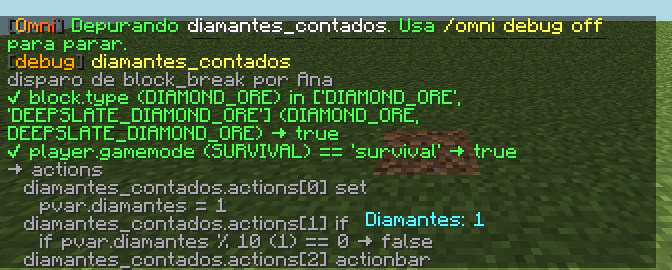

Propuesta B
Claro, alegre y «de Minecraft» sin usar sus texturas: un bloque isométrico propio en pixel art con un rayo (el evento) en una cara y una O en la otra. Letras pixeladas, bordes gruesos y sombras duras.
A broadcast, a kit and 100 coins the first time; a welcome back after that.
Not just «failed»: each condition with the value it read, live, while you play.

Capturas provisionales (en español, de la galería de la 004). Las finales serán escenas nuevas en inglés.